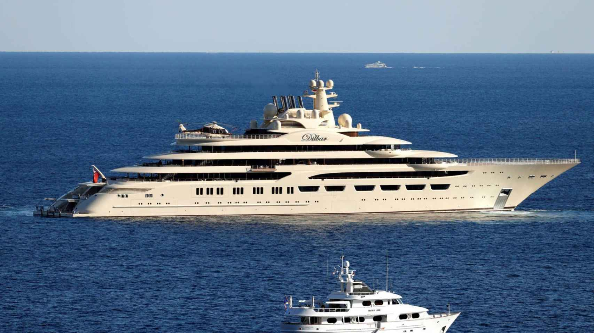

142 m de eslora
Diseño exterior por Nuvolari Lenard. Uno de los más largos jamás construidos.

Velocidad 20+ nudos
Gracias a dos motores MTU y casco de bajo arrastre.

Interior extravagante
Sala de cine, gimnasio, hospital, spa, club submarino, sala de juegos.

2 helipuertos + hangar
Y sistema de defensa antimisiles (según reportes).